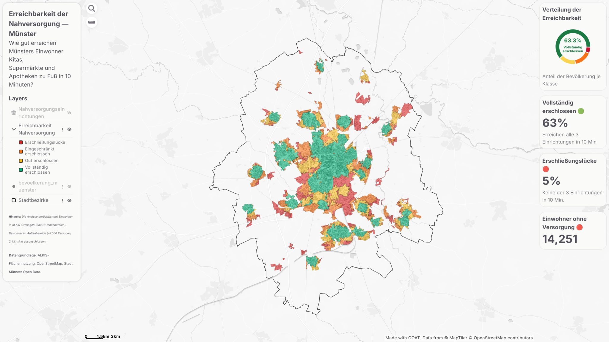
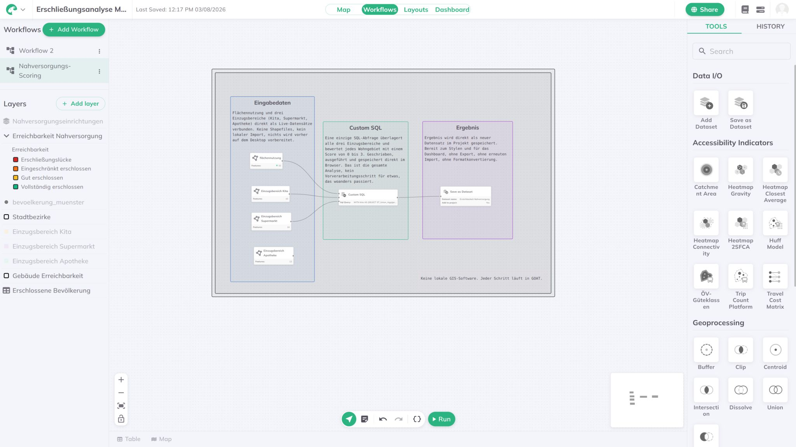

Überblick
Erreicht man eine Kita, einen Supermarkt und eine Apotheke in 10 Minuten zu Fuß? Das ist der Maßstab der BBSR Nahversorgungs-Erreichbarkeit für jedes Wohngebiet in Münster — und genau die Frage, die dieses Dashboard blockgenau beantwortet.
Vollständig im GOAT Workflow (Plan4Better) umgesetzt — ein Isochronen-Tool plus SQL-Editor, ohne einen einzigen lokalen Verarbeitungsschritt in der gesamten Pipeline. Die Einzugsbereiche aller drei Einrichtungstypen werden direkt in GOAT berechnet und mit einer einzigen SQL-Abfrage kombiniert, um jedes Wohngebiet danach zu bewerten, wie viele der drei Einrichtungen zu Fuß erreichbar sind.
Datengrundlage: ALKIS-Flächennutzung, OpenStreetMap und Stadt Münster Open Data.
Ergebnisse
- 63,3 % der Bevölkerung sind vollständig erschlossen — alle drei Einrichtungen in 10 Minuten erreichbar
- 5 % liegen in einer echten Erschließungslücke — keine der drei Einrichtungen zu Fuß erreichbar
- 14.251 Einwohner ohne fußläufigen Zugang zur Grundversorgung
Methodik
BBSR-Standard Nahversorgungs-Erreichbarkeit
Angewendet wurde die BBSR-Methodik zur Erreichbarkeit der Grundversorgung: Ein Wohngebiet gilt nur dann als vollständig erschlossen, wenn Kita, Supermarkt und Apotheke alle innerhalb von 10 Gehminuten erreichbar sind.
Drei Einzugsbereiche, ein Workflow
Berechnung der Einzugsbereiche für Kita, Supermarkt und Apotheke direkt als Live-Datensätze in GOAT — keine Shapefiles, kein lokaler Import, nichts vorher auf dem Desktop verarbeitet.
Individuelle SQL-Bewertung
Eine einzige SQL-Abfrage überlagert alle drei Einzugsbereiche und bewertet jedes Wohngebiet mit einem Score von 0 bis 3, je nachdem wie viele Einrichtungstypen erreichbar sind — geschrieben, ausgeführt und gespeichert direkt im Browser.
Ergebnis als neuer Datensatz gespeichert
Das bewertete Ergebnis wird direkt als neuer Datensatz im Projekt gespeichert, bereit zum Stylen und für das Dashboard — ohne Export, ohne erneuten Import, ohne Formatkonvertierung.
Dashboard-Funktionen
- Vierstufige Erreichbarkeits-Klassifizierung: Erschließungslücke, eingeschränkt erschlossen, gut erschlossen, vollständig erschlossen
- Bevölkerungsebene zur Umrechnung von Flächenklassen in Einwohnerzahlen
- Stadtbezirke zur Orientierung innerhalb Münsters
- Donut-Chart mit dem Bevölkerungsanteil je Erreichbarkeitsklasse
Tools & Technologien
- GOAT (Plan4Better) Workflows — Einzugsbereiche, individuelles SQL, Dashboard
- ALKIS-Flächennutzung — Gebäude- und Flächennutzungsgrundlage
- OpenStreetMap — Fußwegenetz und Einrichtungsstandorte
- Stadt Münster Open Data — ergänzende kommunale Datensätze
- BBSR Nahversorgungs-Erreichbarkeit — Erreichbarkeitsmethodik
Ein ehrlicher Hinweis
Die Analyse berücksichtigt 97,6 % der Bevölkerung Münsters. Die restlichen 2,4 %, rund 7.030 Einwohner im Außenbereich, sind nicht enthalten — die ALKIS-basierte Methode löst Erreichbarkeit nur innerhalb bebauter Wohngebiete auf.
Ergebnis
Ein vollständig interaktives Nahversorgungs-Dashboard für Münster, entstanden ohne einen einzigen lokalen Verarbeitungsschritt — von den Einzugsbereichen über die Bewertung bis zur finalen Karte läuft alles in GOAT. Es gibt Planern einen blockgenauen Überblick darüber, wo die Grundversorgung bereits funktioniert, wo sie nur eingeschränkt gegeben ist, und wo eine echte Erschließungslücke Einwohner ohne fußläufige Kita, Supermarkt oder Apotheke zurücklässt.
Workflow
Die gesamte Bewertungspipeline liegt in einem einzigen GOAT-Workflow — drei Einzugsbereiche fließen in einen individuellen SQL-Schritt, der direkt als neuer Datensatz gespeichert wird. Keine lokale GIS-Software, keine Export-/Import-Umwege.
